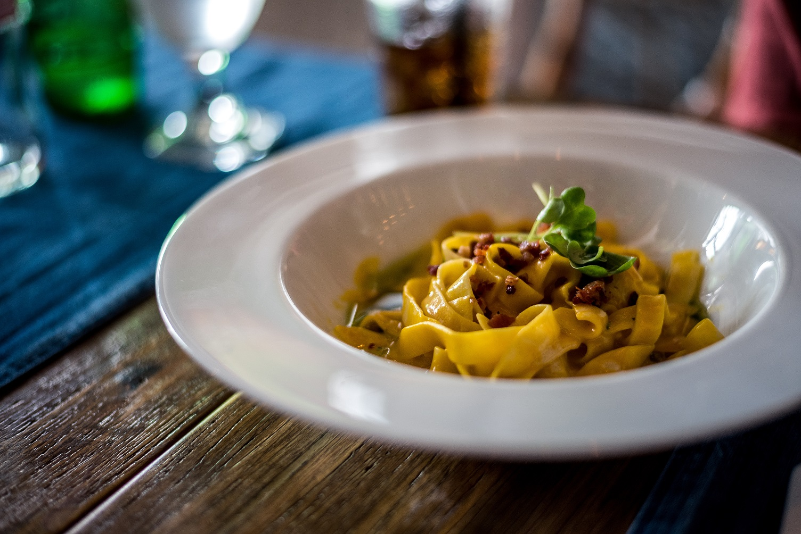

About Us
Custom Eats is a web application dedicated to providing those with
dietary restrictions the ability to filter and accommodate their eating
experiences. Here are the primary features we offer:
-
Customize your own filter by inputting ingredients and nutritional
value ranges you want to filter out
-
Find restaurants and filter out menu items with your filter (if
available for those restaurants)
- Ability to place orders directly
- Find out more information about food and dietary restrictions
